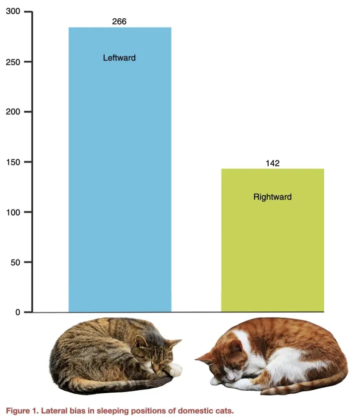

<!DOCTYPE html>
<html>
  <head>
    <title>Kevin's Github Pages</title>
    <link href="town_seal.png" rel="icon">
	<link rel="stylesheet" href="style.css">
  </head>
  <body>
	<div class="navigation_bar">
		<a href="#">Index</a> <!-- Link to top of current page -->
		<a href="elections.html">Town Elections</a>
	</div>
	
    <h1>Welcome to my website!</h1>
	
	<p>
	I'm Kevin, a junior Data Science student at Northeastern University! I am also taking Spanish and economics classes (along with a dite of German). I am interested in languages and linguistics, artificial intelligence, and epistomology in the modern world. Born and raised in Needham, Massachusetts, one of the projects on this site is to catalogue Needham's history in map form. My current projects there are creating election maps along with digitising old maps of the town and other nearby projects (specifically I am most interested in the old Dedham-Providence turnpike, today Route 1, and how it has evolved over time).
	<br>
	<br>
	My most recent endeavours have been to practise skating (and re-starting my hockey skills) and to get back into reading. Most recently I have read A Canticle for Leibowitz (I would recommend, especially the first part, though I think it has the sci-fi habit of explaining too much that directors like Steven Spielberg wisely cut when making movie adaptations like he did for Jurassic Park) and The Martian (would also highly recommend, especially for the more technically inclined, but the movie is also amazing). My next reads will be Mine Were of Trouble (if I can get my hands on a copy) and A Memory Called Empire (an even harder challenge to get ahold of).
	<br>
	<br>
	I have a pet cat who is solid black, even on the paw pads. If you are reading this on Halloween, well, happy Halloween! It's his holiday.
	</p>
	
	
	<p> <i>Did you know that cats are chiral? Mine prefers leftwards and later switches to rightwards when he has slept for too long on one side.</i> </p>
	
	<div class="contact-info">
	<ul>
	<li>Github: cooper-ke</li>
	<li>Electronic mail: cooper.ke {put the symbol here and remove the whitespace} northeastern.edu</li>
	</ul>
    </div>
  </body>
</html>